Aligning Speech-Referenced Zero-Shot Singing Voice Conversion via Singing-Specific Inductive Biases and Post-Training Reinforcement Learning
Research Showcase & Audio Demonstrations
📝 Abstract
Zero-shot singing voice conversion (SVC) has shown strong performance on controlled benchmarks, yet remains unstable in real-world industrial settings. In practice, SVC systems must handle imperfect vocal inputs with residual harmonies and often rely on speech recordings as timbre references. The resulting speech--singing domain mismatch, together with singing’s sensitivity to pitch-dependent timbre variation, makes it difficult for existing methods to simultaneously achieve robustness and perceptual quality.
We propose a real-world robust zero-shot SVC framework that addresses these challenges from three complementary perspectives. First, we introduce robust conditional modeling to alleviate content--timbre entanglement caused by harmony-contaminated inputs. Second, we incorporate singing-specific inductive biases, including an RVC-based timbre shifter and pitch-aware timbre adaptation, to stabilize timbre across pitch variations and preserve perceptually salient high-frequency details. Third, we formulate speech-referenced SVC as a targeted post-training problem and employ a Flow-GRPO-based reinforcement learning scheme to directly optimize multi-objective perceptual rewards under inference-time domain mismatch.
Experiments show consistent gains over strong baselines, with subjective naturalness improving by approximately 16.6%--21.0% across clean, mixed-vocal, and speech-referenced settings.
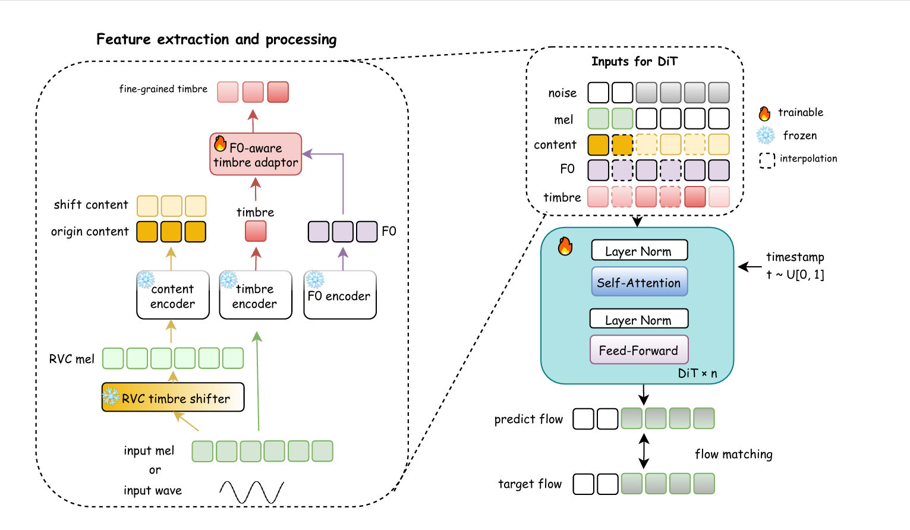
🎵 Real world Mix-vocal cases
Source vocals derived from practical scenarios containing residual harmonic interference.
🔍 Mix-Vocal Inference (Case: 0b15fd96)
Comparison of harmonic removal capabilities. Note how Ours maintains the cleanest spectral structure compared to baselines.
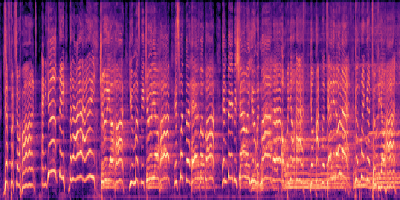
Source (Mix Vocal)
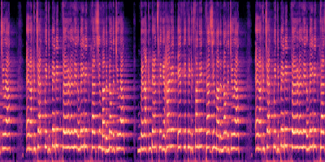
Source (Clean Vocal)
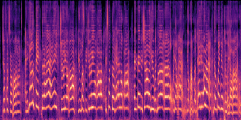
FreeSVC
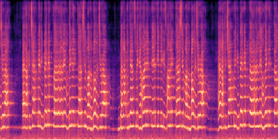
Samoye
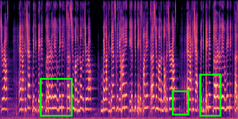
Seed-VC
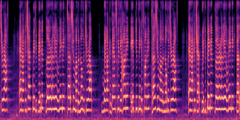
Ours (Proposed)
🗣️ Cases of speech vocal as reference timbre
Zero-Shot SVC using speech recordings as the target timbre reference.
🔍 Speech Reference (Case: 36966_002)
Singing pronunciation more consistent with the reference timbre, and with less high-freq artifacts.
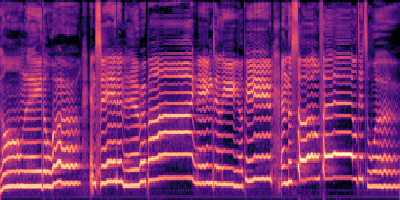
Source (Vocal)
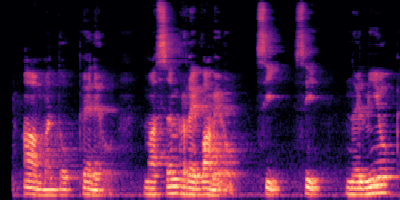
Target (Speech)
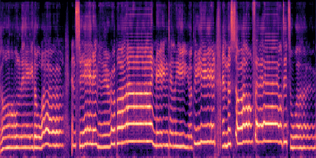
FreeSVC
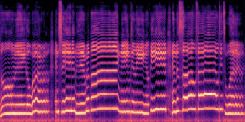
Samoye
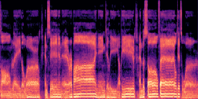
Seed-VC
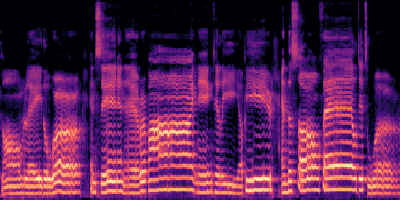
Ours (Proposed)
🎤 Cases of singing vocal as reference timbre
Zero-Shot Singing Voice Conversion using sing timbre for inference.
🔍 Singing Vocal Reference (Case: Sample 5)
Spectrogram comparison showing reconstruction quality of upper harmonics.